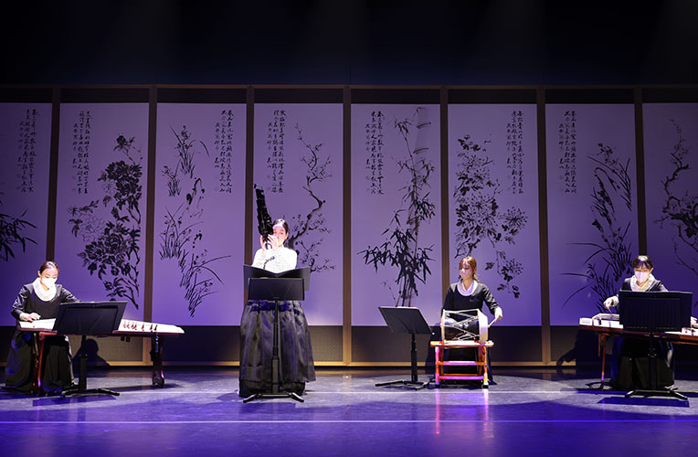

국악창작실내악 <조약돌 Ⅱ>
- 일시
- 12.15.(금) 19:30
- 장소
- 예지당
- 관람료
- 전석 초대
- 출연진/연출진
- 국립부산국악원 국악연주단 기악단
- 관람연령
- 취학아동 이상
예비 국악명인들의 꿈과 미래는 담은 <조약돌_cálcŭlus>
젊은 작곡자들의 작품 활동을 장려하고 영남문화를 활성하고자 국악창작곡 공모를 통해 선발된 우수한 작품을 선보이는 공연. 공연의 제목인 '조약돌'은 오랜 시간 비와 바람 속에서 다듬어진 작고 단단한 돌처럼 국악의 미래를 짊어지고 꿋꿋하게 인내하는 젊은 작곡자를 상징한다.
* 공연내용과 일정은 사정에 따라 변경 될 수 있습니다.
